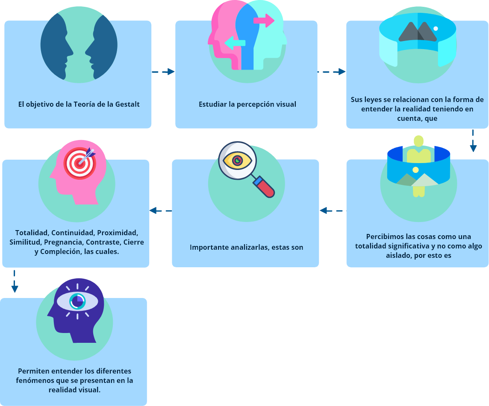

1. Teoría de la Forma
Para el desarrollo de un producto de moda, es fundamental el conocimiento de “Teoría de la forma”, para comprender, conceptualizar y aplicar las diferentes temáticas relacionadas con el cuerpo humano, para transformarlo y modificar su apariencia, estructura y estética.
(…) la fabricación de la primera envolvencia corporal se concibe, desde sus orígenes como un proyecto arquitectónico desde la epidermis, se transfiere a la piel artificial los anhelos de metamorfosis implícitos en el ser humano, que en un proceso de mutación de forma, textura y color en el lienzo térmico se transforma modificando su identidad.
(…) la vestimenta, como primera envolvente artificial es desde su invención, la materialización de un proyecto de carácter arquitectónico que en su proceso de diseño incorpora los conceptos de dimensión y escala; función y forma; estructura, material y construcción; técnica e instrumentación.
(Alcoceba, 2015, p. 19 y 20)
Además de proteger el cuerpo ante las inclemencias climáticas y de las hostilidades del ambiente que nos rodea, el vestido nos distingue. Se presenta como símbolo de pertenencia a cierto grupo étnico o a cierto estatus social. Paradójicamente, el vestido nos individualiza a la vez que nos hace desaparecer frente a nuestros semejantes.
(Avilés, 2016, p. 3)
En el mundo visual la forma es percibida e interpretada por los sentidos, todo se estructura alrededor de como sean percibidas las sensaciones. El objetivo fundamental de esta temática es generar una invitación a explorar nuevas maneras de interpretar y llevar a un estado visual las sensaciones generadas en el cerebro como producto de los estímulos externos, teorizar y recoger conceptos acerca de las formas y plantear el concepto de “Forma” a partir del entorno natural, abstracto e imaginario de acuerdo a las experiencias previas del individuo.
El oído, el gusto, el tacto, la visión y el olfato son el principal medio de construcción de la forma.
1.1 La forma y sus significados, la psicología de la Gestalt
La forma es todo lo que el ojo puede ver o interpretar y se asocia a diferentes conceptos, partiendo del punto, que es la mínima expresión de la representación espacial, es el principio o es el final.
(…) el todo es siempre más que la suma de sus partes”. Esta frase revela exactamente los principios de la teoría de esta corriente: es decir, descubrir porque el cerebro humano tiende a interpretar un conjunto de elementos diferentes como un único mensaje, y como nuestra mente agrupa las informaciones que recibimos en categorías mentales que nosotros mismos hemos establecido. En el ámbito de las artes gráficas, este estudio de la percepción es fundamental a la hora de analizar como el ojo humano lee un determinado esquema, como distingue las formas y los elementos que lo componen y la unidad del mensaje y del significado.
(Lorella, 2016)
La aplicación de estas leyes, es la que da coherencia y armonía al momento de realizar una propuesta de vestuario con un sentido propio. En el álbum que encuentra a continuación podrá conocer algunos ejemplares que dan cuenta de este contexto temático.
En el material complementario encuentra el video “La teoría de Gestalt” y el blog “¿Qué es la teoría de la Gestalt” que le ayudarán a construir un panorama más amplio de este tema.
1.2 Semiótica, semántica, simbolización de las formas y volúmenes
Con la semiótica y semántica se interpretan los signos no verbales y verbales, su base es filosófica, psicológica y sociológica, descifrando los gustos, preferencias y actitudes de las personas o grupos sociales con respecto al entorno; permiten analizar y entender cómo se percibe el mundo desde diferentes miradas sociales, analizando la transformación física, mental y comportamental de las personas, asumiéndose como parte integral de una cultura que armoniza con sus prácticas sociales.
Lo anterior, lleva a entender que cada cuerpo es diferente, aunque conserve una misma estructura y que el vestuario es el encargado de transformarlo, la selección de este puede favorecer o desfavorecer la apariencia estética, existen múltiples opciones, la decisión final le pertenece a cada individuo, quien visualiza, vive y siente el mundo como lo percibe.
Es tarea del profesional de la moda, utilizar las herramientas, que le dan múltiples opciones para transformar la forma del cuerpo por medio del vestuario, teniendo siempre presente que los excesos son perjudiciales y es el control (o límite), la clave para:
Engrosar o adelgazar.
Estirar o recoger.
Aparecer o desaparecer.
Resaltar u ocultar.
Mejorar o empeorar líneas.
Moderar o exagerar formas.
Controlar o descontrolar.
De esta manera es como se logra obtener volúmenes y diferentes simbolizaciones de la forma.
Un aspecto relevante de la semiótica, es el manejo, aplicación y control del color, este representa uno de los elementos más poderosos para captar la atención y producir reacciones emocionales en el receptor.
Analice un poco más a fondo esta temática revisando el siguiente documento:
1.3 Formas geométricas, formas naturales
La naturaleza es la especialista en generar formas diversas, que interpretadas son una herramienta especial para la transformación del vestuario.
Toda representación toma forma cuando el punto se repite, genera movimiento y una dirección creando figuras reconocidas, como, por ejemplo, el circulo que es la forma perfecta y produce sensación de suavidad, armonía, ternura, fragilidad y movimiento; seguido del ovalo que se relaciona con la delicadeza, tranquilidad, suavidad y femineidad. Las formas circulares y ovales tienden a transmitir sensaciones positivas.
Las formas anguladas como el cuadrado, que es una representación estática y estable se asocia a ideas de estabilidad, permanencia, torpeza, honestidad, rectitud, esmero, rigidez, seriedad y equilibrio.
Las líneas rectas y precisas también transmiten un sentimiento de fuerza, profesionalismo y eficiencia, como la línea vertical que sugiere equilibrio, fuerza, dignidad, nacimiento, espiritualidad, ascenso, elevación y vida; la horizontal genera estabilidad, enfatiza y sugiere reposo, pasividad, estabilidad y muerte. Las líneas ascendentes sugieren decisión juventud y salida, las perpendiculares sugieren apoyo y firmeza; formas anguladas sugieren elevación y misticismo, las quebradas peligro, energía, nerviosismo y conflicto; las curvas de movimiento ondulante son femeninas, maternales y sensuales; la espiral indica movimiento continuo y evolución, cambio, creatividad originalidad y rompe con lo establecido, también se les relaciona con la tecnología y el deporte, los trazos delgados y suaves evocan la fragilidad y delicadeza, así como la sencillez de la elegancia, los gruesos generan la sensación de solidez y mayor peso.
El triángulo equilátero con la punta hacia arriba evoca grandeza, ascenso y misticismo, con la punta hacia abajo sugiere depresión y descanso; se asocia con el poder, ciencia, religión y justicia, se le relaciona con la acción a la amenaza, al conflicto, a la tensión, con la masculinidad;
1.4 Las formas en el diseño de vestuario
La configuración de cada persona es diferente, depende de su constitución física, edad, género, procedencia, hábitos alimenticios, costumbres, clima, entre otros, que definen su estructura ósea y musculatura; es decir, su forma corporal. Se pueden encontrar personas muy voluminosas o muy delgadas, con extremidades cortas o largas, con mucho o poco volumen en cadera, cintura, torso, vientre, hombros, personas erguidas o enjutos.
Cuando se va a construir el vestuario, lo primero que se debe tener en cuenta es un análisis antropométrico y determinar las características propias de la persona, que van desde los pies hasta la cabeza, teniendo en cuenta que cada individuo es único. Las grandes diferencias se encuentran en: estatura, talle, contorno de hombro, contorno de cintura, contorno de cadera, contorno de muslo, contorno de brazos, perfil de busto, perfil del abdomen y perfil del derriere.
Dependiendo de las características físicas, los resultados que se buscan al elaborar el vestuario, se logran a través de efectos de confección y patronaje que adelgacen, ensanchen, equilibren, reduzcan, acentúen, destaquen y simulen o efectos aerodinámicos que favorezcan la apariencia estética de las personas. Además, la utilización de accesorios, complementos, material textil, texturas, procesos, acabados y colores también ayudan a cambiar la apariencia estética, teniendo siempre presente la funcionalidad.

1.5 Exploración de la forma
2. Diseño y planos técnicos
El dibujo técnico es la rama de representación que se emplea en la industria para representar los objetos a realizar. Su diferencia con la ilustración, es que el dibujo técnico es normalizado o estandarizado internacionalmente, ya que usa medidas precisas (llamadas cotas) que orientan la fabricación de los productos.
En el diseño de modas se emplea para hacer los planos técnicos (geometrales) tanto de las prendas como de los insumos y accesorios a emplear.
2.1 Dibujo técnico: escuadra ángulos y líneas paralelas
El dibujo como medio de expresión, desempeña un papel de primer orden en las actividades humanas, puesto que antes de que se cree el proyecto, cualquiera que sea, es necesario diseñarlo con sus características e indicaciones en un dibujo. El dibujo técnico es una rama del dibujo, que se emplea en la industria, para representar objetos o ideas técnicas de carácter práctico, por medio de líneas, símbolos y convenciones se otorga información útil a quien llevará a cabo su materialización.
El trazo de dibujo técnico se logra mediante variadas líneas, se diferencia del dibujo a mano alzada por el uso de instrumentos, tales como: escuadra, cartabón, compás, transportador, lápices en diferentes durezas que van de la 2H a la 6B, escalímetro, entre otros; para conseguir la precisión en las medidas, ángulos y proporciones.
(Castellanos (2009); Concepto.de, s.f.; Parramón (2007); Pérez (1998); SENA; Barco; Martínez y Motivar (1984).
2.2 Líneas rectas, lenguaje de líneas y escalas
En el dibujo técnico se emplean diferentes tipos de líneas para describir las figuras de los objetos a realizar. Las más conocidas son:
En el dibujo técnico se emplean varios tipos de líneas, a lo que se le denomina lenguaje o valor de líneas, estas han sido normalizadas o estandarizadas con el fin de que su interpretación sea la misma en cualquier lugar del mundo. Para la rotulación de los planos se emplea la letra técnica, que al igual que las líneas se encuentra normalizada.
La escala es la relación de tamaño entre el objeto real y el dibujo que lo está representando, ya que, si se va a dibujar una casa, un auto o una prenda de vestir, no se podrá dibujar a tamaño real (lo que se denomina escala 1:1) sino que deberá hacerse a una escala menor y así poder trazarlo en una pieza de papel.
(González, 2017; Pérez, 1998; SENA et al., 1984; Significados, s.f.).
2.3 Dibujo desde la observación, plano técnico y cotas
El dibujo de objetos comienza por la observación, cuando se observa para dibujar se tienen en cuenta detalles, proporciones y la construcción en general de los mismos. Una vez observado se pasa al proceso de bocetos, en el que se hacen anotaciones a tener en cuenta al momento de realizar los planos.
El plano técnico es la representación bidimensional (2D) de un objeto, consta de las siguientes vistas: planta, alzado, inferior, perfil derecho, perfil izquierdo y posterior, de las cuales se presentan las que sean requeridas; es decir, si llevan información se tienen en cuenta, de lo contrario se omiten.
Adicional a las vistas, se presentan los cortes, en los cuales se muestran partes internas o detalles de los productos.
El proceso de acotado o marcación de las cotas es fundamental en el dibujo técnico, pues es con estas que se determinan medidas, diámetros, espesores, ángulos y proporciones. Un correcto acotado tiene el número preciso de las medidas, ni más, ni menos de las necesarias.
Adaptado de Arturo Geometría (2019); Biguri (s.f.); Etiduela (s.f.); Raya & Dibujar Bien. (2013).
2.4 Transformaciones geométricas, ángulos y proyecciones
En el dibujo técnico se recurre a la transformación geométrica de las formas, como son la traslación, rotación, simetría, entre otras, para el desarrollo de los planos y de las proyecciones tridimensionales de las piezas.
La proyección gráfica de un objeto en tres dimensiones se denomina isometría y, según el sistema normalizado en el que se trabaje, se realizan bajo proyecciones a diferentes ángulos y con relación a diferentes vistas.
(Biguri (s.f.); Castellanos (2009); Dibujo Técnico paso a paso (2019); Mulet (2014).
3. Figurín y ropero
La ilustración y el figurín existen desde épocas muy remotas. El dibujo ha acompañado a la humanidad en todas las civilizaciones siendo la herramienta más utilizada para expresar ideas, incluso para mostrar el poder económico de la alta sociedad, se han desarrollado técnicas especializadas con las que se han creado grandes obras de arte. Diseñadores y marcas de moda han utilizado la ilustración para mostrar sus colecciones y generar contacto visual de las ideas con el mundo exterior.
A principios del siglo pasado, aparecen las grandes revistas especializadas en moda, como Vogue, Elle, Vannity Fair, Harper's Bazaar, Telva, Glamour, Advance, Moda de Paris, Francois, Moda Práctica, Las Ziveiteilige Klaird entre otras, que incluyeron en sus portadas dibujos en figurín y dibujos planos, bocetos, esquemas, pinturas, permitiendo incursionar y desarrollar el uso de técnicas de ilustración y color hasta convertirlas en referentes para los creativos en el mundo de la moda, en su momento.
La ilustración de moda es una tarea que se encomienda a dibujantes especializados que tienen como función la expresión bidimensional de prendas de vestir en forma detallada. El dibujo en plano consiste en un boceto que representa la parte frontal, el perfil y la parte posterior, destacando el corte, la línea y los detalles de la prenda, forros y acabad os. Este tipo de representación (ropero) es de gran utilidad para el patronista, que debe interpretar y recrear con la máxima fidelidad la idea creada por el diseñador. El dibujo en plano es una especie de enlace entre el boceto y la prenda acabada y en ocasiones los creativos prefieren este tipo de dibujo al figurín.
En la actualidad se han desarrollado otras técnicas para la actividad del dibujo plano y figurines, evolucionando a la utilización de programas digitales especializados en facilitar herramientas para el dibujo; llegando a construcciones en 3D con mayor realismo que permiten visualizar la prenda hasta el punto de casi tocarla, entrando en el mundo digital como interfase entre el creativo y el desarrollador. El figurín y el dibujo plano son herramientas indispensables para promocionar colecciones, marcas y productos de moda.
“Una buena ilustración no es solamente un buen dibujo. Una ilustración siempre tiene una función, siempre hace algo: contar una historia, vender un producto, describir un entorno, enseñar el funcionamiento de algo, etc.” (Redondo, 2014, p. 3).
3.1 La ilustración en el mundo de la moda
3.2 Técnicas de ilustración y expresión de la figura humana
¿Qué es el figurín?
El figurín es la representación de la figura humana con una idea de indumentaria, poniendo énfasis en el equilibrio total entre el estilo de vestir, el sentido de volumen y otros elementos, que ayudan a mantener unas proporciones y poses coherentes, que se ajustan para expresar distintos ideales y conceptos.
Y en la actualidad…
En la actualidad y en décadas pasadas, la composición, los materiales y los gestos de los figurines cambian en respuesta a las mismas consideraciones que afectan al diseño de prendas, reflejando las condiciones sociales de una época particular, por ejemplo, la revolución sexual de la década de 1960 suscitó que la ilustración de moda se volviera más atrevida.
El rol del ilustrador
Por lo anterior, el ilustrador debe seleccionar la técnica de acuerdo al textil en el que se elaborará la prenda, por ejemplo, en una transparencia se usa una técnica a base de agua como acuarela, ecoline, de acuerdo a lo que quiera expresar o representar.
Las técnicas de ilustración
Las técnicas de ilustración están relacionadas con la expresión, pose, sentimiento y actitud reflejados en el figurín: rigidez, suavidad, delicadeza, movimiento en la figura humana.
Se clasifican en técnicas secas (lápiz, lápices de colores, lápices conté, pasteles, crayolas), siendo el lápiz la técnica más utilizada, por la facilidad en el manejo, corrección y evolución en el dibujo; técnicas húmedas (marcadores o rotuladores, acuarela, acrílico, ecoline) y otras técnicas no convencionales (el té, el café, el maquillaje); cada marca utiliza estas técnicas dependiendo del segmento o perfil de usuario al que va dirigida.
Utilizada por los diseñadores para plasmar sus ideas sobre el papel, la ilustración de figurines de moda a menudo requiere dibujos rápidos y gestuales que transmiten la esencia de una prenda. Estas ilustraciones suelen presentar figuras largas y alargadas para imitar la altura de las modelos y, como el enfoque está en la ropa –y no en los rostros– los rasgos faciales a menudo son escasos. Dentro de la propia ilustración de moda existen muchos estilos diferentes, algunos más rudimentarios y otros más pulidos.
(Vargas, 2019)
3.3 Estructuras del figurín, principios y técnicas para elaborar figurines
Dibujar para la moda: “dibujo de moda”
Los antiguos griegos consideraban que la belleza era una cuestión de proporciones perfectas. Según esta concepción, el dibujo de la figura clásica utilizaba la cabeza, -vista en relación con el cuerpo como un todo- como una unidad de medida para determinar puntos de referencia y amplitudes para las diferentes partes del cuerpo. “A diferencia del Arte, el dibujo de moda requiere una evaluación menos objetiva de la realidad. El figurín de moda, o croquis, es infinitamente maleable, ideal para visualizar estándares de belleza que a menudo son inalcanzables.”
(Wesen, 2012, p.33)

¡El figurín es la herramienta!
El figurín es una herramienta para visualizar los conceptos de diseño, la forma en que se estilice debe servir al propósito de la marca o del creativo de moda, lo importante es la coherencia de la composición de los figurines que reflejen el perfil del usuario.
Patrón de medida único
La cabeza, es el patrón de medida elegido para la ilustración de la moda, porque es la parte del cuerpo humano que menos transformaciones tiene durante el crecimiento, por esta razón se elige como canon de medida. Siendo la medida normal en proporciones siete cabezas y media, la ideal ocho cabezas y media para iniciar la ilustración de un figurín, nueve, diez, once y doce cabezas una estilización de la figura y decisión personal. La clave está en experimentar y luego escoger las proporciones que más convengan.
Boceto y proporciones
La representación de la figura humana y sus proporciones es un boceto como la herramienta más sencilla para tomar notas y transmitir o recordar ideas, diseños o tendencias de moda.
El ilustrador conocerá las posiciones básicas del cuerpo: donde colocar las líneas de cadera en relación con la línea de los hombros, cómo girar la pierna y el brazo para indicar movimiento y cómo vestir el cuerpo con una gran variedad de estilos.
En la actualidad, se permite la transformación del figurín con características físicas más acordes a la realidad de los usuarios de las diferentes prendas de vestir; es decir, con siluetas más reales, alcanzando la democratización de la moda (figuras obesas, delgadas, embarazadas, estatura alta, estatura baja, cuerpos mutados, cuerpos protésicos, entre otros).
el material complementario “Cómo dibujar figurines de moda desde cero” en donde podrá profundizar un poco sobre la construcción de figurines.
3.4 Ropero, desarrollo e interpretación por medio de dibujos planos o geometrales
La técnica de dibujo plano es la más utilizada por todo tipo de personas que quieren plasmar sus ideas de una forma inmediata; desarrollarla, será el inicio de una creación de vestuario.
La técnica de dibujo plano es la más utilizada por todo tipo de personas que quieren plasmar sus ideas de una forma inmediata; desarrollarla, será el inicio de una creación de vestuario.
El perfeccionamiento de esta técnica es la que se llama “Ropero”, que se caracteriza por tener una línea clara y precisa de cada uno de los detalles que tiene la prenda, siempre teniendo en cuenta el control de las proporciones que se manejan con reglas a escala para mayor exactitud de las medidas; sin embargo, en la mayoría de los casos se realiza a mano alzada y es el dibujante con su experiencia el que logra equilibrar las dimensiones del dibujo.
Para lograr que la ilustración entregue toda la información pertinente al desarrollador de moda, es importante que este conozca de: patronaje, proporciones, confección de prendas y materiales e insumos; porque son estos elementos los que le dan la validez al dibujo por la forma como se caracterizan; bien sea en costuras, largos de prendas, ruedos, dobladillos, cortes, alforzas, recogidos, pliegues y accesorios como hebillas, botones y cierres, entre otros.
La interpretación que el dibujante logre plasmar en el boceto, facilitará el buen desarrollo que se dará en todos los departamentos de la empresa, los cuales toman del dibujo la parte que les corresponde: patronaje, trazo, corte, ensamble, calidad y terminación; logrando la producción homogénea de las prendas a confeccionar.
“Los bocetos planos se utilizan para las presentaciones y para la producción, en la que se requiere un mayor grado de información técnica”.
(Wesen, 2012, p.7)

Glosario
Acotación:es el conjunto de líneas, cifras y signos indicados en un dibujo, que determinan la forma y dimensiones de una pieza (Biguri Z., s.f.).
Acotar:def. 1. Delimitar el ámbito o espacio de algo (Real Academia Española, s.f.). Def. 2. Poner cotas o números en un plano (Farlex, s.f.).
Antropométrico:la antropometría es la sub-rama de la antropología biológica o física que estudia las medidas del cuerpo humano y las estudia referentemente sin ningún tipo de porcentaje de error mínimo, ya que las medidas han de ser exactas a la par que se tomen.
Apariencia:conjunto de características o circunstancias con que una persona o una cosa se aparece o se presenta a la vista o al entendimiento.
Boceto:dibujos más o menos detallados que plasmen formas concebidas por la imaginación del artista.
Boceto:proyecto o apunte general previo a la ejecución de una obra artística. Esquema o proyecto en que se bosqueja cualquier obra (adaptado de Real Academia Española, s.f.).
Canon:palabra que proviene del griego Χανων, regla, es un concepto que se refiere a las proporciones perfectas o ideales del cuerpo humano y se refiere a las relaciones armónicas entre las distintas partes de una figura.
Cartabón:regla en forma de triángulo escaleno con ángulos de 90°, 60° y 30° (Papelería Distrimar, 2020).
Circulo:circunferencia, curva cerrada cuyos puntos equidistan del centro.
Compás:es un instrumento que cuenta con un par de brazos articulados, los cuales están vinculados entre sí mediante un eje o una bisagra en su sector superior. Con un compás es posible registrar distancias y dibujar arcos o círculos (Definicion.de, s.f.).
Instrumento formado por dos brazos articulados terminados en punta y unidos por un eje en su parte superior, que sirve para trazar circunferencias o arcos y tomar distancias (Real Academia Española, s.f.).
Concepto:1. Representación mental de un objeto, hecho, cualidad, situación, etc. "es muy difícil definir el concepto de belleza". 2. Opinión o juicio, especialmente el que se tiene de una persona. "tiene muy buen concepto de tus amigos".
Configuración:forma particular de una cosa, determinada por la disposición de las partes que la componen.
Corpóreas:que tiene cuerpo, volumen o consistencia material.
Cota:número que en los planos topográficos indican la altura de un punto, ya sobre el nivel del mar, ya sobre otro plano de nivel. Altura de un punto sobre un plano de nivel. Acotación, anotación o cita (Real Academia Española, s.f.).
Cuadrado:figura geométrica que tiene cuatro lados iguales que forman cuatro ángulos rectos.
Derriere:parte trasera del cuerpo referente a las caderas.
Dibujo:es el lenguaje universal, ya que sin mediar palabras es posible transmitir ideas de modo gráfico que resulten comprensibles para todos.
Enjuto:que está muy delgado, en posición de cerramiento.
Equilibrio:estado de inmovilidad de un cuerpo sometido a dos o más fuerzas de la misma intensidad que actúan en sentido opuesto, por lo que se contrarrestan o anulan.
Erguidas:erguir se refiere a levantar o levantarse o a poner o ponerse derecho. Cuando un individuo se encuentra erguido, está parado (de pie) o tiene la columna vertebral recta y la cabeza elevada.
Escala:línea recta que, dividida en partes iguales, permite representar metros, kilómetros u otra unidad de medida. Estas herramientas son utilizadas para dibujar distancias y dimensiones de manera proporcional en un plano o mapa es la proporción o tamaño en que se desarrolla una idea o un proyecto (Real Academia Española, s.f.).
Escalímetro:regla de sección triangular que tiene graduaciones de diversas escalas en cada una de sus caras (Real Academia Española, s.f.).
Escuadra:regla en forma de triángulo isósceles con un ángulo de 90° y dos de 45° (Papelería Distrimar, 2020).
Estructura:conjunto de relaciones que mantienen entre sí las partes de un todo.
Etnia:una etnia es una comunidad humana que comparte un conjunto de rasgos de tipo sociocultural, al igual que afinidades raciales. La palabra, como tal, proviene del griego éthnos, que significa pueblo.
Figurín:dibujo usado como modelo para hacer trajes y adornos de moda.
Forma:todo lo que el ojo puede ver, conjunto de líneas y superficies que determinan la planta, el contorno o el volumen de una cosa, en contraposición a la materia de que está compuesta.
Función:actividad particular que realiza una persona o una cosa dentro de un sistema de elementos, personas, relaciones, etc., con un fin determinado.
Funcionalidad:propiedad de lo que es funcional y tiene utilidad para algo.
Interpretación:explicar o declarar el sentido de algo, pero principalmente el de un texto, explicar acciones, dichos o sucesos que pueden ser entendidos de diversas formas.
Leyes Gestalt:las leyes de la Gestalt son unas reglas que explican el origen de las percepciones a partir de los estímulos.
Línea:del latín linea, es un término con múltiples usos. Se trata, para la geometría, de una seguidilla de puntos que se extiende indefinidamente y de manera continua en una única dimensión (Definicion.de, s.f.).
1. F. Geom. Sucesión continua e indefinida de puntos. 2. F. Medida longitudinal que equivale a cerca de dos milímetros. 3. F. Raya en un cuerpo cualquiera. (Real Academia Española, s.f.).
Líneas:una línea funciona como una sucesión continua de puntos trazados, como por un trazo o un guion. Las líneas suelen utilizarse en la composición artística, ya sea que el artista lo use en trazos rectos sueltos, que no forman una figura o forma en particular.
Mensaje:el mensaje es, en el sentido más general, el objeto de la comunicación. Está definido como la información o enunciado verbal que el emisor envía al receptor a través de un canal de comunicación o medio de comunicación determinado.
Metamorfosis:cambio o transformación de una cosa en otra, especialmente el que es sorprendente o extraordinario y afecta a la fortuna, el carácter o el estado de una persona.
Modificar:ajustar, Cambiar una cosa variando su disposición o alguna característica sin alterar sus cualidades o características esenciales.
Movimiento corporal:es la conducta motriz con finalidad expresiva, comunicativa y estética en la que el cuerpo, el movimiento y el sentimiento se fusionan como elementos básicos de la figura.
Óvalo:figura plana, oblonga y curvilínea, especialmente la que tiene la forma de la sección longitudinal de un huevo.
Paralela:líneas que mantienen una equidistancia en todos sus puntos. Si las rectas A y B son paralelas, no habrá forma en que se produzca una intersección entre ambas (Definicion.de, s.f.).
Plano:representación esquemática, en dos dimensiones y a determinada escala, de un terreno, una población, una máquina, una construcción, etc. (Real Academia Española, s.f.).
Pose:postura física o actitud que adopta la persona que hace de modelo ante un pintor, escultor o fotógrafo.
Proporción:es la relación de tamaño o cantidad que existe entre las partes de algo dentro de un todo o entre los elementos de un conjunto.
Raza:la raza, en cambio, hace referencia a los grupos en que se subdivide una especie. Considera únicamente aspectos de tipo biológico, así como de índole física, asociados a las características fenotípicas de los individuos.
Ropero:es dibujo técnico, dibujo plano o dibujo de producto. Es la ilustración, presentación plana (bidimensional) o dibujo de una prenda o de un complemento (accesorio) de la ropa sin la figura humana. En síntesis, sirve para comunicar el equilibrio, la estructura y las especificaciones de una prenda o de un producto.
Rotación:movimiento de un cuerpo alrededor de un eje (Real Academia Española, s.f.).
Del latín rotatĭo, es la acción y efecto de rotar (dar vueltas alrededor de un eje). Se trata de un movimiento de cambio de orientación que se produce de forma tal que, dado cualquier punto del mismo, este permanece a una distancia constante del eje de rotación (Definicion.de, s.f.).
Semántica:el término semántica se refiere al estudio de diversos aspectos del significado, sentido o interpretación de signos lingüísticos como símbolos, palabras, expresiones o representaciones formales.
Semiótica:ciencia que estudia los diferentes sistemas de signos que permiten la comunicación entre individuos, sus modos de producción, de funcionamiento y de recepción.
Sentidos:los sentidos son el mecanismo fisiológico de la sensación y permiten obtener información de lo que está a nuestro alrededor, así como determinados estados internos del organismo; vista, tacto, olfato, audición, gusto.
Signo:objeto, fenómeno o hecho que, por una relación natural o convencional, representa o evoca otro objeto, fenómeno o hecho.
Simbolizaciones:1. Acción de simbolizar.
2. Efecto de simbolizar.
Símbolo:signo que establece una relación de identidad con una realidad, generalmente abstracta, a la que evoca o representa.
Simetría:Del latín symmetrĭa, es la correspondencia exacta en tamaño, forma y posición de las partes de un todo (Definicion.de, s.f.).
1. F. Correspondencia exacta en forma, tamaño y posición de las partes de un todo. 3. F. Geom. Correspondencia exacta en la disposición regular de las partes o puntos de un cuerpo o figura con relación a un centro, un eje o un plano (Real Academia Española, s.f.).
Tamaño:es la comparación de una forma con otras conocidas.
Técnica:conjunto de procedimientos o recursos que se usan en un arte, en una ciencia o en una actividad determinada, en especial cuando se adquieren por medio de su práctica y requieren habilidad.
Transformación:acción de transformar o transformarse. Efecto de transformar o transformarse.
Transportador de ángulos:utensilio semicircular graduado que sirve para medir y trazar ángulos (Real Academia Española, s.f.).
Traslación:movimiento de los cuerpos que siguen curvas de gran radio con relación a sus propias dimensiones (Real Academia Española, s.f.).
cuando se habla de trasladar figuras geométricas, sean bidimensionales o tridimensionales, en el espacio (Definicion.de., s.f.).
Triángulo equilátero:en geometría, un triángulo equilátero, es un polígono regular; es decir, tiene sus tres lados iguales. En la geometría euclídea tradicional, los triángulos equiláteros también son equiangulares, donde los tres ángulos internos son iguales y miden 60°.
Vista:se llama vista de una pieza u objeto a la imagen del mismo que se observa desde una determinada posición (Biguri, Z., s.f.).
Material complementario
| Nombre del documento o material | Tipo de material | Enlace del recurso |
|---|---|---|
| (Universidad Nacional de San Juan - Facultad de ingeniería - Departamento Matemática, 2018) Dibujo y sistemas de representación - Uso de las escuadras | Ver | |
| (Navarro, s.f.) Uso de Escuadras Como hacer rectas paralelas y perpendiculares | Ver | |
| (Geometrales, s.f.) Geometrales | Ver | |
| (Etiduela, s.f.) Acotación | Ver | |
| (Johnson, 2000) Dibujo I Parte 1 | Ver | |
| (Company et al., s.f.) Dibujo normalizado | Ver | |
| (CPR de Avíles, s.f.) Bloque: Técnicas de expresión y comunicación | Ver | |
| Prueba de acceso a la universidad - Mayores de 25 años - Fase específica dibujo técnico | Ver | |
| (SENA et al., 1984) Fundamentos de dibujo - Módulo instruccional No. 5 | Ver | |
| (IES Ramón Menéndez Pidal, s.f.) EDUCACIÓN PLÁSTICA Y VISUAL trazados básicos | Ver |
Referencias bibliográficas
Alcoceba, L. M. (2015). Piel Artificial: metamorfosis arquitectónica del cuerpo a través de la superficie. (Tesis doctoral, Universidad Politécnica de Madrid).http://oa.upm.es/40268/1/MARIA_DEL_BREZO_ALCOCEBA_LOPEZ_ARAQUISTAIN.pdf
Altuna. (s.f.). Profesor Altuna. (Video). YouTube.https://www.youtube.com/user/profesoraltuna/videos?view=0&sort=da&flow=grid
Altuna. (2019a). Letra normalizada - Con audio. (Video). YouTube.https://www.youtube.com/watch?v=Qp_OPq1FQwk&t=83s
Altuna. (2019b). Trazado de paralelas y perpendiculares. (Video). YouTube.https://www.youtube.com/watch?v=Kwb7U5sC9dI
Arte Divierte. (2018). Perspectiva de 2 puntos para artistas - Muy fácil. (Video). YouTube.https://www.youtube.com/watch?v=IREoh0PkgTw&feature=youtu.be
ARTOSKETCH. (2018). Como dibujar una perspectiva a dos puntos de fuga – TUTORIAL. (Video). YouTube.https://www.youtube.com/watch?v=un6QINDDsjs&feature=youtu.be
Arturo geometría. (s.f.). Arturo Geometría. (Video). YouTube.https://www.youtube.com/c/ArturoGeometria/videos?view=0&sort=da&flow=grid
Arturo Geometría. (2014). Giro de una figura (Transformaciones geométricas: Igualdad). (Video). YouTube.https://www.youtube.com/watch?v=NummIe4XG2U
Arturo Geometría. (2019). Acotación - Normas básicas para aprender a acotar. (Video). YouTube.https://www.youtube.com/watch?v=v1vjHB60c8Q
Avilés, I. A. (2016). Reflexiones en torno a la moda: tensiones, paradojas y frivolidades. Apuntes sobre Georg Simmel y Gabriel de Tarde. BAJO PALABRA. Revista de Filosofía II Época, 12, 265-273. DOI: http://dx.doi.org/10.15366/bp2016.12.022
Baeza, J. (0). Figurín de moda: manual para estudiantes. Editorial Nobuko.
Bartolome. (2015). Líneas normalizadas. Dibujotecnico.Com.http://www.dibujotecnico.com/lineas-normalizadas/
Biguri Z. I. (s.f.). Dibujo Técnico.https://ibiguridt.wordpress.com/temas/vistas/#vistas
Carapia, G. D. y García, C. J. (2019). Semiótica de la Moda. (Video). YouTube.https://www.youtube.com/watch?v=JWKhsr9pqsc
Castellanos, W. (2009). Dibujo técnico. El Cid Editor | apuntes.http://ebookcentral.proquest.com/lib/senavirtualsp/detail.action?docID=3182087
Chromat. (2019). Ten Year Anniversary Runway Show. (Video). YouTube.https://youtu.be/9t_CihSARHE
Company, P., Gomis, J. M., Ferrer, I. & Contero, M. (s.f.). DibujoNormalizado.
Concepto.de. (s.f.). Dibujo Técnico - Concepto, tipos y líneas que se utilizan.https://concepto.de/dibujo-tecnico/
CPR de Avíles. (s.f.). Bloque: Técnicas de expresión y comunicación (p. 36).
Definicion.de. (s.f.). Definicion.de. Definicion.De. Retrieved July 6, 2020.https://definicion.de/sastre/
Dibujar Bien. (2013). Cómo dibujar bien: secretos de las proporciones y medidas. Dibujar Bien.com. [video]. Youtube.https://www.youtube.com/watch?v=8wm4YXIvGO0
Dibujo Técnico paso a paso. (2019). Traslación de figuras geométricas - Dibujo técnico paso a paso Transformaciones geométricas. (Video). YouTube.https://www.youtube.com/watch?v=CYK5rZE6hW4
Drudi, E. (2010). Dibujo de figurines para el diseño de moda / Amsterdam; Singapore: Pepin. Pags. 352.
Drudi, E. (2011). Dibujo de figurines para el diseño de moda masculina. / Amsterdam: The Pepin Press. Págs. 400
Ejercicio de reconocimiento de la figura humana. (2015). Recuperado de Material de formación del instructor Luis Alfonso Hincapié Echeverri. SENA
EPV1PAC. (2017). Uso de escuadra y cartabón, paralelas y perpendiculares. (Video). YouTube.https://www.youtube.com/watch?time_continue=3&v=okjnJuAzG84&feature=emb_logo
Etiduela. (s.f.). Acotación.http://www.etitudela.com/profesores/llr/paginawebdibujo/downloads/acotacion.pdf
Farlex. (s.f.). The free dictionary. The Free Dictionary by Farlex.https://es.thefreedictionary.com/cosmética
Fernández C. (2016). Aprende sobre el uso del escalímetro en un minuto. Modos de uso del escalímetro. (Video). YouTube.https://www.youtube.com/watch?v=Cihw88CFEr4
Feyerabend, F. V. (2014). Figurines de moda: patrones para ilustración de moda. Editorial Gustavo Gili. Geometrales. (s.f.).
Gómez, W. (2013). Para qué es el dibujo técnico. (Video). YouTube.https://www.youtube.com/watch?v=gCTalQvVmeA&feature=youtu.be
González, C. (2017). Dibujo Técnico: tipos de línea, grosores y usos - MVBlog.https://www.mvblog.cl/apuntes/dibujo/dibujo-tecnico-tipos-de-linea-y-usos/
Hernani, J. (2016). Escalas -Dibujo Técnico Clase 5. (Video). YouTube.https://www.youtube.com/watch?v=2dzfmbITR7o
Ideas en 5 minutos CHICAS. (2018). 14 dibujos antiestrés. (Video). YouTube.https://www.youtube.com/watch?v=GcaRZAsjIa4&feature=youtu.be
IES Ramón Menéndez Pidal. (s.f.). EDUCACIÓN PLÁSTICA Y VISUAL trazados básicos. 1–13.
Johnson, S. (2000). Dibujo I (Issue 24, pp. 38–51). Red Tercer Milenio.
Jorge Manuel. (s.f.). Dimensión Cota - Pinterest. Pinterest.https://www.pinterest.es/pin/312366924129653797/?nic_v1=1aHzF6Qj7kxamPeUpupd8Ep8UM3Dv%2BquUKwn96BEBBExyc2kMhRYATeRbiK7aHT2Wk
Lorella. (2016, mayo 20). ¿Qué es la teoría de la Gestalt? [Web log post].https://www.stampaprint.net/es/blog/acerca-de-la-impresion/la-teoria-la-gestalt
Mifeng. (2019). Fashion Design. [video]. Pinterest.https://co.pinterest.com/pin/765119424183507247/
Mulet, J. (2014). Dibujar una figura en perspectiva isométrica con curva. (Video). YouTube.https://www.youtube.com/watch?v=wQeEt2RFfK0&feature=youtu.be
Navarro, S. (s.f.). Uso de Escuadras Como hacer rectas paralelas y perpendiculares.https://sjnavarro.files.wordpress.com/2008/09/uso-escuadras.pdf
Ocampo, P. M. (2009). Semiótica Y Estética: Comunicación. Editorial Trillas, 2009. Prin.
Priest, T. F. (2001a). Líneas, forma y espacio. En Guía para vestir. McGraw-Hill. Interamericana.
Priest, T. F. (2001b). Tú vestuario. En Guía para vestir. McGraw-Hill Interamericana.
Papelería Distrimar. (2020). Cómo hacer paralelas y ángulos con escuadra y cartabón correctamente - Papelería Distrimar. Papeles Distrimar.https://www.distrimar.es/como-hacer-paralelas-angulos-escuadra-cartabon-correctamente.html
Parramón, P. E. (2007). Manuales Parramón. Dibujo (2a. ed.). Parramón Paidotribo S.L.http://ebookcentral.proquest.com/lib/senavirtualsp/detail.action?docID=5810718
Paz, L. (2014). Cómo dibujar figurines de moda desde cero (Proporciones) Curso de dibujo. [video]. Youtube.https://www.youtube.com/watch?v=t5A6FTWU8Kc
Pérez, R. E. (1998). Dibujo técnico y geométrico. McGraw-Hill Interamericana.
Profe Garro. (2018). Manejo de compás | Ejercicio de aplicación fácil. (Video). YouTube.https://www.youtube.com/watch?v=cPNB1f1Cxhc
Proyecto Parramón ediciones. (2010). Diseño de accesorios de moda.
Prueba de acceso a la universidad - Mayores de 25 años - Fase específica dibujo técnico. (s.f.).
Rodríguez, M. D. (2015a). La Gestalt. [Video]. Linkedin.https://www.linkedin.com/learning/diseno-para-no-disenadores-formato-y-composicion/la-gestalt?u=84303994
Rodríguez M. D. (2015b). El rectángulo. [Video]. Linkedin.https://www.linkedin.com/learning/diseno-para-no-disenadores-formato-y-composicion/el-rectangulo?u=84303994
Rodríguez M. D. (2015c). El triángulo. [Video]. Linkedin.https://www.linkedin.com/learning/diseno-para-no-disenadores-formato-y-composicion/el-triangulo?u=84303994
Rodríguez M. D. (2015d). El círculo. [Video]. Linkedin.https://www.linkedin.com/learning/diseno-para-no-disenadores-formato-y-composicion/el-circulo?u=84303994
Rodríguez M. D. (2015e La línea. [Video]. Linkedin.https://www.linkedin.com/learning/diseno-para-no-disenadores-formato-y-composicion/la-linea?u=84303994
Romano, A. M. (2019). Forma. En Elementos de diseño: enfoque teórico general: práctica textil e indumentaria. Ediciones Infinito.
Real Academia Española. (s.f.). DRAE | Diccionario de la lengua española | Edición del Tricentenario | RAE - ASALE. Retrieved July 6, 2020.https://dle.rae.es/
Redondo, G. M. (2014). Ilustración digital. Ministerio de Educación de España.https://elibro-net.bdigital.sena.edu.co/es/ereader/senavirtual/114112?page=1
SENA, Barco, R., Martínez, S. y Montivar, Á. (1984). Fundamentos de dibujo - Módulo instruccional No. 5. 35.
Significados. (s.f.). Significado de Línea (Qué es, Concepto y Definición) - Significados. Significados.Com.https://www.significados.com/linea/
Smith, C. (2012). Curso de Geometrales y Fichas Técnicas, por Cynthia Smith. (Video). YouTube.https://www.youtube.com/watch?v=FYNESsXntAw
Smith, C. (s.f.). Ilustración a mano alzada.https://cynthiasmith.com.ar/amano/
Takamura, Z. (2007). Diseño de moda: Conceptos básicos y aplicaciones prácticas de ilustración de moda. Promopress.
TraZArte - El Sendero del Dibujante. (2013). Técnicas para aprender a dibujar - el trazo y ejercicios para calentar. [video]. Youtube.https://www.youtube.com/watch?v=R6olMYk8KYg
TRAZO DE LINEAS - Dibujo técnico. (2014).https://sites.google.com/site/cecytehoctun/trazo-de-lineas
Universidad Nacional de San Juan - Facultad de ingeniería - Departamento Matemática. (2018). Dibujo y sistemas de representación - Uso de las escuadras.
Vargas, S. (2019). 8 Diferentes estilos de dibujo que puedes probar ahora mismo.https://mymodernmet.com/es/estilos-dibujo/
Wesen, B. M. (2012). Dibujo de moda: técnicas de ilustración para diseñadores de moda.